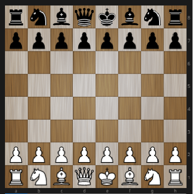

Правила игры
Шахматная доска
Естественно, каждый полководец должен изучить расположение и рельеф местности, где ему предстоит планировать и вести сражения. Шахматисту в этом отношении проще, ведь все свои бои он будет проводить на одной и той же «местности», на стандартной шахматной доске. Но уж эту «местность» опытные игроки изучают досконально, помнят буквально по именам собственное имя каждой клеточки, ее цвет, знают в каком месте доски скорее всего будет происходить самая жаркая борьба, как и какие фигуры туда лучше подвести…
Не пренебрегайте изучением шахматной доски!
Театр военных действий где вам предстоит вести шахматные баталии — квадрат, в свою очередь поделенный на черные и белые квадратики — поля. Всего 64 поля, 32 белых и 32 черных.
Черные и белые поля чередуются и, казалось бы, доска симметрична можно как угодно ее повернуть, ничего не изменится. Но это не так. Прежде чем начинать игру убедитесь, что ближнее к вам левое угловое поле черного цвета.
У каждого поля шахматной доски есть свое собственное имя — координаты. Для этого используют латинские буквы a, b, c, d, e, f, g, h и цифры от 1 до 8, написанные по краям доски вот таким образом:
Ряды из 8 полей, находящиеся напротив каждой из цифр, называются горизонталями, а столбцы из 8 полей, находящиеся напротив каждой из букв, называются вертикалями. Соответственно горизонтали и вертикали и обозначаются своей цифрой или буквой. Горизонталь 1, горизонталь 2… или вертикаль а, вертикаль b и т.д. Таким образом, каждое поле принадлежит одной вертикали и одной горизонтали, от этого каждое поле и получает свое имя — координаты. К примеру, поле находящееся одновременно на вертикали f и на горизонтали 4 имеет имя — поле f4. Поля шахматной доски одного цвета, находящиеся на одной линии называются диагоналями.
Правила передвижения фигур
Шахматные армии выстраиваются на поле боя лицом к лицу. Силы сторон перед сражением абсолютно равны и результат битвы зависит только от таланта и знаний полководцев. Впереди каждой армии выстраиваются пешки.
У белых 8 пешек по второй горизонтали и 8 пешек у черных по седьмой горизонтали. За спиной у пешек выстраиваются фигуры.
- по углам доски становятся ладьи:
- рядом с ладьями встают кони:
- рядом с конями — слоны:
- по центру, за пешечной фалангой, становится ферзь:
- и около него король:
Чтобы не перепутать местами ферзя и короля следует запомнить простое правило «Ферзь любит свой цвет». Таким образом белого ферзя следует ставить на белое поле, а черного — на черное. Та сторона доски где в начальной стоят короли называется королевский фланг, а где ферзи — ферзевой.
Начальное расположение на диаграмме:

На деревянной шахматной доске:
Первый ход в шахматной партии всегда делают белые. Ход — это передвижение одной фигуры с одного поля на другое, свободное либо занятое фигурой соперника.
А теперь разберем, как и какие фигуры делают эти ходы, узнаем возможности своих солдат.
Ладья
Ладья — это прямолинейная и мощная фигура, дальнобойная артиллерия шахмат, может двигаться на любое число полей по горизонтали или по вертикали.
Слон
Слон также дальнобойная фигура, шахматный лучник, может перемещаться на любое число полей по диагонали. Легко заметить, что каждый слон может перемещаться по полям одного цвета, либо только по белым, либо только по чёрным. На поле какого цвета в начальной позиции слон оказался, по полям того же цвета он и будет ходить до конца. Поэтому слонов называют белопольными и чернопольными соответственно.
Ферзь
Ферзь — самая сильная фигура, совмещает в себе возможности ладьи и слона. Может перемещаться на любое число свободных полей в любом направлении по прямой, по горизонтали, по вертикали и по диагонали.
Конь
Конь самая хитрая фигура. Если остальные фигуры ходят прямо по открытым линиям, то конь не таков. Конь идет на два поля прямо по горизонтали или вертикали в любую сторону, и резко поворачивает на 900 тоже в любую сторону. На диаграмме показано как может пойти конь стоящий на b6. Он перешагивает поля b7 и b8, поворачивает и встает на поле с8. Получается маршрут, похожий на букву «Г». Поэтому легко запомнить «Конь ходит буквой Г». А поворачивать эту «букву» можно как угодно. На диаграмме показаны все ходы коня с поля е5. Следует заметить, при своем ходе, конь обязан пройти «букву Г» от начала, до конца, он не может остановится на середине «буквы».
Интересная особенность коня, это единственная фигура, которая после каждого хода меняет горизонталь, вертикаль, диагональ и цвет поля на котором стоит.
Еще одна хитрость коня, он может «брать барьер», во время своего хода «перепрыгивать» через соседние фигуры. На диаграмме мы видим, что конь на b1 окружен пешками и слоном и, чтобы сделать ход, он, вроде бы, должен ждать, когда ему освободят пространство для хода. Это было бы справедливо для любой другой фигуры, но не для коня. Конь с легкостью преодолевает барьер и может, по желанию игрока, прыгнуть на поля а3 или с3, или d2
Король
Самая главная и ценная фигура. Цель шахматного сражения — взять в плен короля противника, объявить ему мат.
Король так же как и ферзь может перемещаться по горизонтали, вертикали, диагонали в любых направлениях, но только на одно поле.
Однако один раз за партию король имеет право сделать более резвый ход, рокировку. Если все фигуры стоящие между королем и ладьей ушли, а сам король и ладья еще не делали ходов,
король может двинуться к ладье на два поля, а ладья «перепрыгивает» через монарха, закрывая его своей широкой спиной. Так будет выглядеть расположение ладьи и короля после короткой рокировки на королевский фланг:
А так после длинной рокировки на ферзевой фланг:
Обязательно нужно помнить, что, хотя во время рокировки двигаются и король и ладья, по правилам рокировка считается ходом только короля. Поэтому, если хотите сделать рокировку, начинать ее нужно перемещением именно короля на два поля в сторону, а потом перенести ладью. Не следует сначала пододвигать к королю ладью, а потом прятать за нее короля. В этом случае противник может сказать: «Ты сначала дотронулся и двинул ладью, ладьей и ходи, короля не тронь.»
Рокировка невозможна:
- если король или ладья во время партии уже делали ходы;
- если между королём и ладьей находится какая-либо фигура;
- если поле, на котором находится король или поле, которое он должен пересечь или занять, атаковано фигурой противника.
Если атакована или пересекает атакованное соперником поле только ладья, рокировка разрешена.
Пешка
Пешки — рядовые солдаты, пехотинцы шахматной армии. Своими характеристиками пешка напоминает древнеримского легионера. В одиночку, оторванный от строя легионер, как боевая единица, слаб, но строй, где легионеры поддерживают и защищают друг друга, может кого угодно смести со своего пути. В бою фаланга легионеров обречена двигаться только вперед. Если другие рода войск кавалерия, лучники, могут маневрировать, отходить назад, в сторону, то строй пехотинцев-легионеров всегда медленно и неотвратимо движется прямо на врага. Повернуть, отступить, значит, сломать строй и погибнуть.
Пешка так же обязана идти только вперед. С начальной позиции на два или на одно поле, по желанию игрока, следующими ходами — только на одно поле. На диаграмме пешки а2 и b2 стоят на начальной позиции и могут пойти и на два поля и на одно. Пешка а2 на поле а3 или а4, а пешка b2 на поля b3 или b4. Видно, что остальные пешки белых уже ходили, поэтому могут двигаться только на одно поле. Пешка с3 может пойти на поле с4, пешка g6 на поле g7, пешка h5 на поле h6.
У пешки, в отличие от других фигур, просто ход и ход со взятием отличаются. Опять вспомним римского легионера. Прикрытый широким тяжелым щитом-скутумом и вооруженный коротким мечом-гладиусом, легионер колол не прямо перед собой, а наискосок от щита, вперед и вбок. Пешка тоже бьет вперед и вбок, по диагонали на одно поле. На диаграмме пешка d4 уперлась своим щитом в щит черной пешки d5 и не может ее ударить, однако может смертельно ужалить коня на с5. Пешка g6 может пробить ладью на f7 или черную пешку на h7.
Как видим черная пешка е7 стоит на начальной позиции, и поэтому имеет право сделать ход на два поля вперед, на е5. Имеет-то она имеет, но поле е6 находится под боем белой пешки f5, а пехотинцам бегать по полям находящимся в зоне действия вражеского меча чревато. В этой ситуации белая пешка f5 может взять пробежавшую мимо черную пешку, а самой передвинуться на поле е6. Такое взятие называется взятием на проходе. Такое взятие возможно только сразу, ответным ходом на рывок вражеской пешки.
Когда пешка, преодолев все опасности, доходит до горизонтали, она, по желанию игрока, превращается в любую фигуру, кроме короля. В подавляющем большинстве случаев пешку превращают в наиболее сильную фигуру, в ферзя.
Другие правила шахмат
Как известно, в любом сражении солдаты не просто маневрируют на поле боя, они нападают и бьют солдат противника, а сами защищаются от вражеских атак. Шахматные фигуры не исключение, тоже нападают, бьют врага и защищаются от атак.
Ходы в шахматах выполняются соперниками по очереди. Ход может состоять из простого перемещения своей фигуры, а может из взятия фигуры соперника. При этом она убирается с доски, а фигура, которая совершила взятие, ставится на место побитой фигуры.
На диаграмме ферзь черных, при своем ходе, может взять белую ладью на е3, в этом случае ладья убирается с доски, а ферзь побивший ее ферзь становится на поле е3. Также ферзь может взять слона не а6. При этом слон убирается, а ферзь становится на а6. Показаны также другие возможные взятия разными фигурами.
Нападение на короля называется шахом. На диаграммах показан шах королю от различных фигур.
Игрок обязан защитится от шаха. Сделать это можно тремя способами — уйти королем, закрыть короля своей фигурой, взять атакующую фигуру противника. На диаграмме белый ферзь напал на черного короля, объявил шах. Черные могут уйти королем, закрыться ладьей или взять шахующего ферзя слоном.
Если возникла позиция, когда король находится под шахом, а игрок не может сделать ни одного хода, чтобы его избежать, это значит, что королю поставили мат. С арабского словосочетание «шах мат» переводится как «король умер». Главная цель игры поставить мат королю противника. В шахматах означает проигрыш. Партия заканчивается.
На диаграмме мат черному королю. Белая ладья d8 дает шах, закрыться или взять напавшую ладью невозможно, так же как уйти от шаха.
Шахматные партии не всегда играются до мата. Часто игрок получивший плохую позицию и считая свое положение безнадежным, сдается не дожидаясь мата, так как уверен, что мат рано или поздно неизбежен. Однако даже в самой тяжелой позиции, при невнимательности противника, проигрывающий игрок может избежать поражения и потребовать ничью.
Если возникает позиция, при котором сторона, имеющая право хода, не может им воспользоваться, так как все её фигуры и пешки лишены возможности сделать ход по правилам, причём король не находится под шахом, это значит, что на доске пат. Партия заканчивается, объявляется ничья.
На диаграмме у белых ладья и король, против одинокого черного короля. Белые предвкушают победу и готовы в несколько ходов поставить мат и выиграть. Однако очередь хода черных. Шаха им нет, а ходить некуда. Брать ладью нельзя, она под защитой короля, поля а7 и b8 под боем ладьи. Пат. Ничья.
Другая ничейная ситуация это троекратное повторение. Часто достигается вечным шахом. На диаграмме у белых материальный перевес и следующим ходом они готовы поставить мат. Однако ход черных и они ходят ферзём на f2 и объявляют шах. Белый король обязан отступить на h1, другого способа защитится нет. Но черные вновь делают шах, возвращаясь ферзём на f1. У белого короля нет выбора кроме как вернуться на h2. Избежать непрерывных шахов нет возможности. И после троекратного повторения позиции объявляется ничья.
Также ничья фиксируется:
- если обе стороны сделали 50 последних ходов без взятия и без хода пешкой;
- если на доске осталось недостаточно фигур для постановки мата.
Ну и конечно, игроки имеют право по взаимному согласию зафиксировать ничью, если ни один из них не видит пути к выигрышу.
Начинающему шахматисту ещё следует запомнить важное правило, шахматные полководцы, отдав необдуманный приказ не могут его сразу отменить. Назад ходы не берут, а прикоснувшись к фигуре, обязаны ею пойти. «Тронул — ходи!»
Сравнительная ценность фигур
| Фигуры | Символ | Ценность |
|---|---|---|
| Пешка | 1 | |
| Конь | ~3 | |
| Слон | ~3,5 | |
| Ладья | ~5 | |
| Ферзь | ~9 | |
| Король | ∞ |
Проблема сравнительной силы и ценности тех или иных групп фигур постоянно возникает в шахматных партиях, когда стоит вопрос о размене. В шахматной теории ценность фигур принято измерять в пешках. Общеприняты следующие соотношения:
Эти соотношения вовсе не достаточны для объективной оценки тех или иных действий в конкретной партии. В игре к ним добавляются многочисленные дополнительные соображения. На сравнительную ценность фигур может влиять тип разыгрываемой позиции, этап партии, на котором производится размен, положение конкретных фигур. Так, практически любая фигура в центре доски держит под ударом больше полей, чем на стороне и, тем более, в углу, поэтому размен своей угловой фигуры на равнозначную центральную фигуру противника может быть выгодным. Конь и слон формально считаются равноценными, но на практике их сравнительная ценность очень сильно зависит от позиции. Два слона почти всегда сильнее двух коней. Слон сильнее коня в игре против пешек, слон и пешки сильнее в игре против ладьи противника, чем конь и то же количество пешек. Слон и ладья обычно сильнее, чем конь и ладья, однако ферзь и конь часто оказываются сильнее, чем ферзь и слон. Двумя слонами можно дать мат одинокому королю при точной защите слабейшей стороны, двумя конями — нет. Действия дальнобойных фигур почти всегда ограничены другими фигурами, в то время как конь может перепрыгивать через них. От шаха коня невозможно закрыться — нужно либо отходить королём, либо забирать коня.